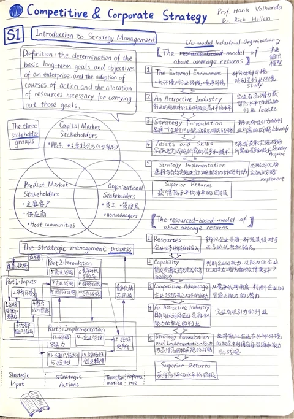
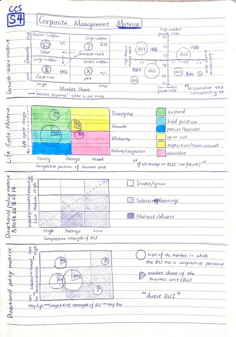

A year of learning.
A notebook for life.
In 2023–2024, I stepped away from work for a full-time MBA. This is my place to revisit what mattered: the ideas, the frameworks and the pages I wrote by hand. A record of that year, with room to keep learning.


Original pages.Ongoing questions.
Start with the ideas worth keeping
Competitive & Corporate Strategy
Industry, advantage, business models, corporate scope and renewal.
Business Negotiations
Interests, alternatives, preparation and the design of agreements.
Product Management
Customer problems, product choices and the validation of value.
From a question to a framework
Porter's Five Forces
Five Forces examines how competition over economic value extends beyond direct rivals. The focal unit is an industry: suppliers, buyers, substitutes and potential entrants can all constrain its profit potential.
Read the framework S02 / Business modelThe Business Model Canvas
A business model describes the connected activities through which an organization meets a market need and captures value. The nine-block canvas makes that logic visible: customer choices, delivery arrangements and financial consequences should support one another.
Read the framework S05 / Internal analysisThe VRINO framework
VRINO examines whether a resource, routine, capability or competence can support sustained competitive advantage. The course uses five tests: Valuable, Rare, Inimitable, Non-substitutable and Organized.
Read the frameworkSome ideas still
belong on paper.
The arrows, crossed-out thoughts and handwritten connections are part of the memory. All nine pages remain in their original form, alongside a growing English study guide.
Explore the original notebook ↗